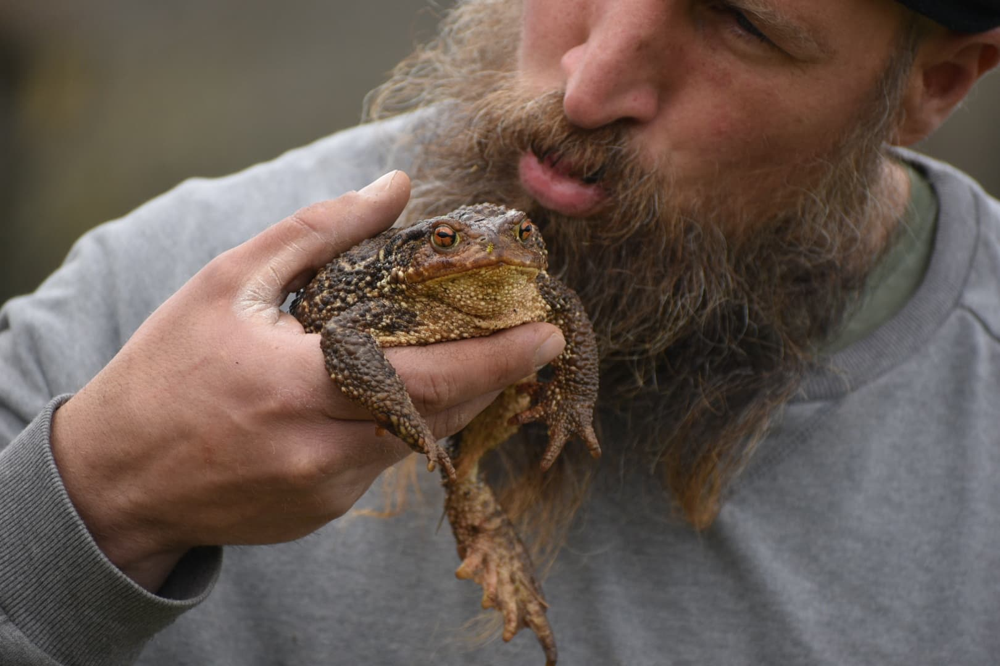
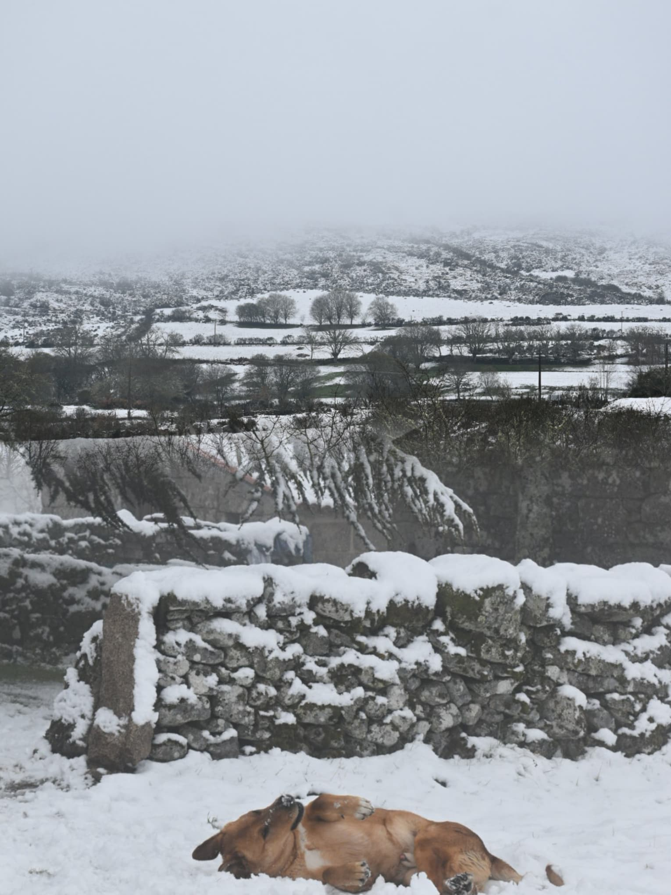
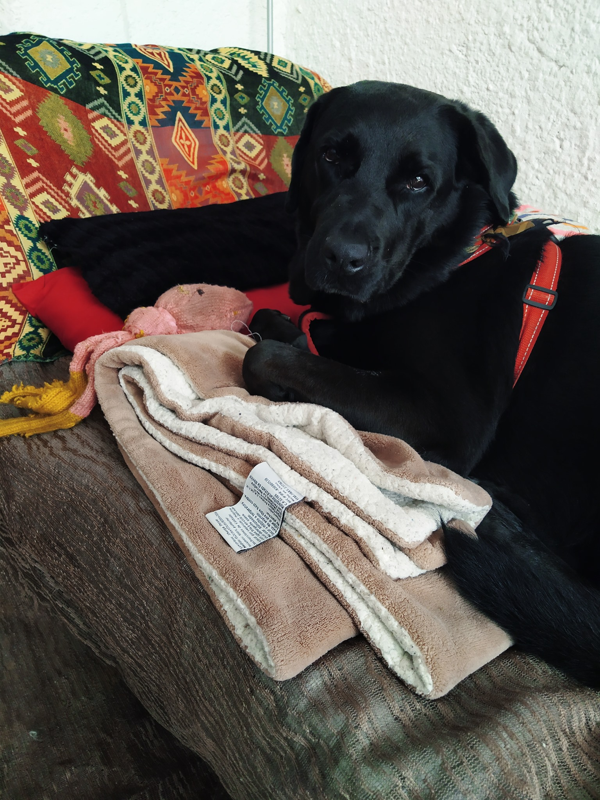
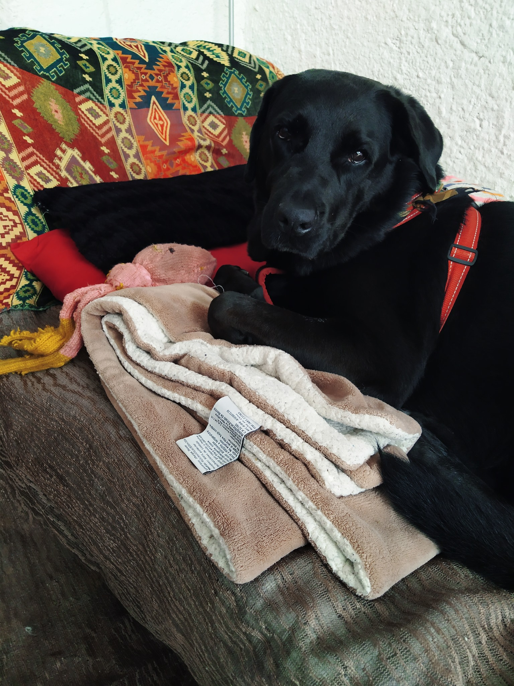

Nuestro sueño
Soñamos con tener un espacio donde los animales puedan convivir con nosotros en armonia. Rescatar los animales que podamos y darles la mejor vida posible. Por ahora tenemos 9 perros, que os presentamos mas abajo en esta misma página. Por ahora Santuario Pepis tiene 35 hectareas de terreno, por lo que tenemos espacio mas que suficiente para alojar a una buena cantidad de animales. Conforme nuestra tribu crezca, esperemos contar con uno o varios veterinarios para poder cuidar de manera óptima del estado de salud de nuestros hermanitos.

Objetivo 1: Rescate 300 ovejas
En nuestro pueblo, hay un ganadero con unas 300 ovejas. Se dedica a embarazarlas y a vender los corderitos. Dentro de unos 5 años planea jubilarse, por lo que es probable que acabe vendiendo todas las ovejas para que sigan siendo explotadas o matadas para alimento.
Aquí vemos una oportunidad. Queremos comprarle todas las ovejas y las naves donde las guarda. Con las 35 hectareas, tenemos terreno de sobra para pasearlas todos los dias y que se alimenten de la propia tierra.
Tenemos 5 años para lograrlo. No se como lo haremos, pero estoy seguro de que lo conseguiremos. Hace un año no sabiamos como comprariamos esta casa y estos terrenos.. y ya llevamos varios meses viviendo y soñando aquí.
Objetivo 2: Aumentar nuestra manada
Ya tenemos 9, pero queremos tener mas. Decenas, cientos.. ¡miles! La idea es poco a poco construir instalaciones donde poder alojar a tantos animales como podamos para que puedan vivir con nosotros en tranquilidad.
No hay plazo ni limite. Segun como vayamos viendo nuestras posibilidades y de manera responsable iremos rescatando mas perritos para unirlos a nuestra manada.
Los perros mexicanos
Estos son los que cruzaron el oceano con nosotros.

Pepis IronDog
Pepis fue la primera perrita que adopte. Me la dieron en Guadalajara, Mexico, una pareja que la rescato y no podía hacerse cargo de ella, ya que necesita mucha atención y ellos trabajaban fuera de casa.
Era un poco rabiosita, me recuerdaba a las viejitas malhumoradas que se la pasan gritando a sus vecinos. También estaba llena de energia y le encantaba correr con su carrito.
Por desgracia falleció recientemente. Por eso he dedidido ponerle al santuario su nombre en su honor.
Stoya alias "Chops"
Kia, adopto a esta perrita tapatita (de Guadalajara, Mexico). Desde pequeña fue la gordita de su camada, siempre le ha encantado comer.
Es muy tranquila y cariñosa, pero.. ¡No te acerques a su comida!

Milka alias "Miss Wilkis" "Missis Wilkinson" "Milkis wilkis" "Sweiser"..
Esta fue la tercera perrita que llego a convivir con nosotros. Entro en el jardin de nuestra casa en San Cristobal de las Casas en México y se puso a jugar con Stoya. Luego se fue. Poco a poco sus visitas fueron mas habituales, entre otras cosas porque al igual que ha muchos otros perros callejeros de la zona, les dabamos de comer. Al final se quedó con nosotros.
Es una perra muy energética y alocada. Tengo un vínculo especial con ella, porque le hemos salvado la vida al menos 3 veces. La primera cuando envenenaron a todos los perros de la zona. Estabamos paseando todos por el monte, cuando todos empezaron a echar espuma por la boca. Cogi a Milka y la baje de la montaña y luego logramos parar un coche para que nos llevará a un veterinario. En aquellos días se murieron otros 5 o 6 perros envenenados que no pudimos salvar.
La segunda vez fue cuando desenterro un cable electrico del jardín y lo mordio hasta que se electrocuto. Por suerte estaba yo cerca y la escuche y junto con un vecino pudimos reanimarla. La tercera vez, jugando como loca que esta, la pata de Pantuflo se le engancho en su collar, y ambos estaban retorciendose. Milka asfisiandose y Pantuflo retorciendo su pata. Por suerte agarrando yo a Milka y Kia a pantuflo, logramos desenredarlos.
Pantunflo alias "Pantunflero" "Pantunfliminito"
A pantunflo nos lo encontramos por primera vez en una calle, afuera de una tienda. Estaba sucio y mojado como una pantufla vieja. Como no sabiamos que era macho lo llamamos pantunfla.
Desde el primer día que lo conocimos, siempre se mostro muy cariñoso. Es un perro cariñoso con todos los humanos, su area era fuera de esa tienda, porque asi conseguia que la gente le regalara comida.
Un día fuimos a buscarlo para adoptarlo.. y no estaba. Cuando volviamos hacia casa nos lo encontramos caminando delante de un grupo de humanos. Tan feliz como si fuera uno mas. Les preguntamos si era su perrito y nos dijeron que no, asi que se vino con nosotros.
Los nuevos perritos
Recien llegados a nuestra manada.
Perla alias "Perlita" "Troll"
Perlita es una perrita ya mayor, de unos 13 años. Es una perra grande de unos vecinos de nuestro pueblo. Los vecinos la trataban muy bien, pero la pobre dormia siempre afuera.
Cuando llegamos, obviamente la acariciamos y poco a poco se fue acercando a nosotros. Al principio solo se venia a pasear con nosotros. Luego comenzo a venir a la casa y ahora ya se la pasa todo el tiempo con nosotros.
Ya tiene su propia camita en nuestra casa y la verdad se le ve muy feliz. Es una perra muy cariñosa y se ve que esta muy agradecida por tener un lugar caliente donde pasar sus ultimos años.
Obelix alias "Obelisco"
A Obelix lo encontramos en twitter. Al parecer era un perro que llevaba 5 años encerrado en perreras. Una buena alma vio su situación y lo apadrinaron. Lo movieron de una perrera a un refugio de animales.
Allí tenía una mejor vida, pero aun asi, no era un buen lugar para el. Obelix tiene artritis y en el refugio seguia durmiendo en el frío. Tenia mas espacio que en la perrera y de vez en cuando lo sacaban a una jaula con un poco de cesped con algun otro perro.
Así que decidimos adoptarlo. Es un perro algo conflictivo por su pasado. Ya nos ha mordido a 4 personas jaja, pero la verdad ahora esta mucho mejor. La artritis le ha remitido bastante y ya corre y juega. Y como esta mas faliz, ya no muerde (espero jaja).
Troski alias "Trosko"
Este grandote es un perro que trabajaba cuidando vacas en un pueblo cercano. Un día paseando a nuestra manada lo vimos a lo lejos y le llamamos. Sorpresivamente se vino con nosotros. Era muy cariñoso y vino hasta casa. Le dimos de comer y luego lo llevamos de vuelta a donde lo habiamos encontrado.
No encontramos a sus dueños, asi que al final, pues nos siguió y se quedo con nosotros unos dias. Finalmente conocimos a sus dueños y se lo devolvimos. Dejamos de pasear por esa zona, para evitar que se les escapara y viniera con nosotros.
Aun así, volvió a escaparse. Como los dueños no parecian tener mucho interes en el, pues por ahora nos lo hemos quedado. Ya lleva un mes con nosotros. Ha sido problematico tener dos machos grandotes juntos (y encima con Pantunflo que es pequeño pero matón) pero ya parece que se han acostumbrado. Ahora ya es parte de nuestra manada.
Galería de imágenes
 
